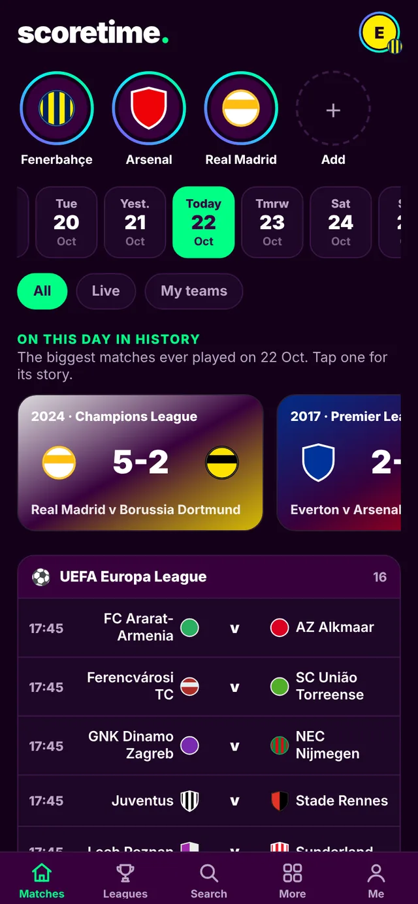
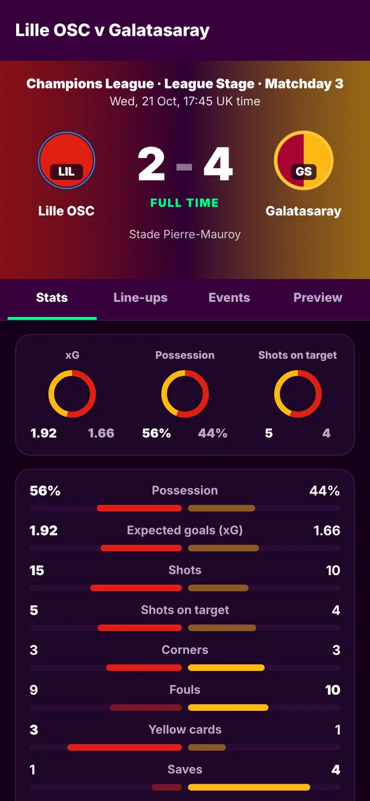
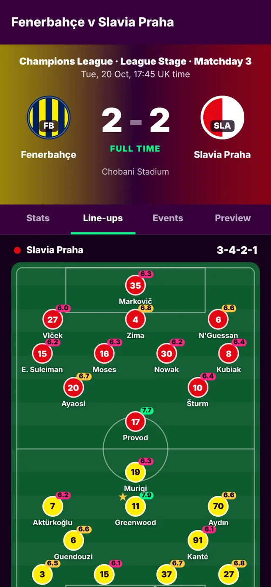
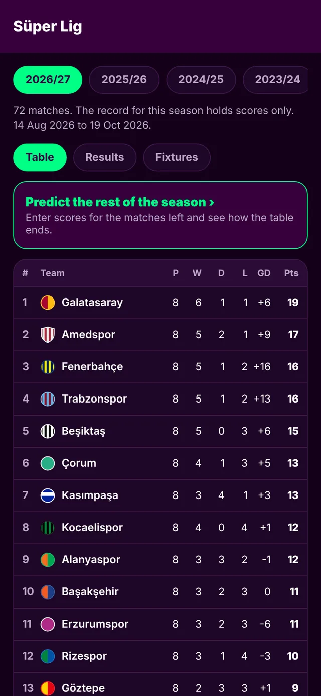
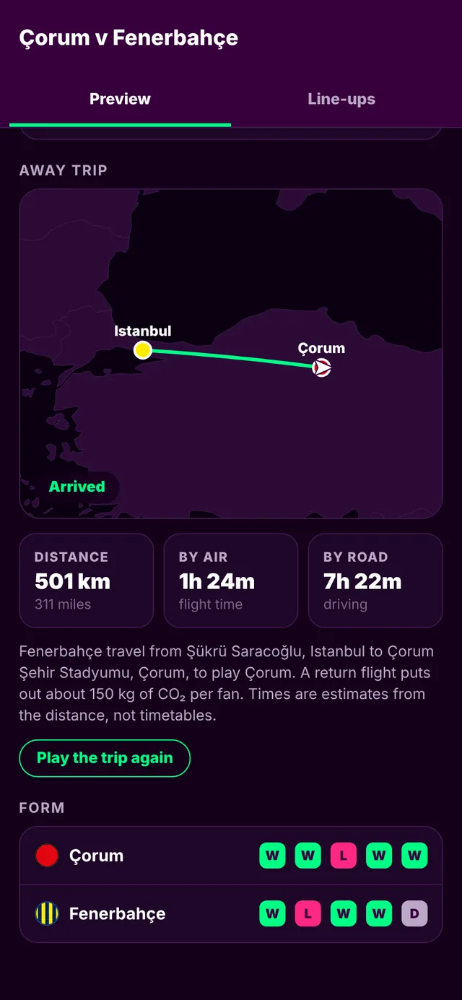
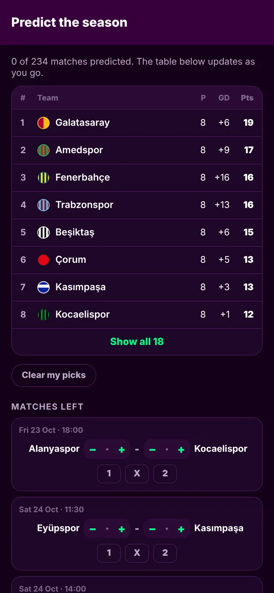

Inside the app
Screens from the current build, with real results.

Your teams firstToday's matches, with your clubs at the top.

Match statsxG, possession, shots, corners and cards.

Line-ups and ratingsTap a player for his match.

Live tablesThe table moves while games are on.

Away tripsDistance and travel time for every away day.

Predict the seasonPick the scores and see how it ends.
What it does
Live scores
Scores and minutes from Europe's top leagues, the Süper Lig and the Champions League, updated while the games are on.
Match centre
Stats, line-ups, formations, player ratings and every goal, card and substitution.
Your club, your way
Pick your club once. Its colours, form and next match follow you around the app.
On this day
The biggest matches ever played on today's date, told as stories you tap through.
150 years of results
More than half a million matches, from the first international in 1872 to last night.
Search that knows fans
Find clubs by nickname or old name: PSG, Spurs, Small Heath, Woolwich Arsenal.
Every sport keeps score its own way.
Scoretime is built around four sports. It shows the score while it is happening, and the result as soon as it is final.
- Football Goals Live scores, match stats, line-ups and live tables, from the Premier League to League Two and across Europe.
- Cricket Runs and wickets Ball by ball: Tests, ODIs, T20s, The Hundred and county cricket.
- Tennis Games, sets and match Every tour-level match since 1968, with serve statistics.
- Formula 1 Positions and points Every championship race since 1950, with lap charts and pit stops.
Football, all the way down the pyramid.
Football is the heart of Scoretime. It follows all four divisions of the English Football League, and the leagues UK fans watch most.
- 1Premier League
- 2Championship
- 3League One
- 4League Two
- CupsFA Cup and EFL Cup
- Europe's top leagues
- La Liga, Bundesliga, Serie A, Ligue 1, Eredivisie, Primeira Liga, the Süper Lig and the Scottish Premiership.
- European nights
- The Champions League, the Europa League and the Conference League.
- National teams
- Every international on record since 1872, with the World Cup and the Euros.
- Club history
- Results and league tables back to 1888, with scorers, cards and line-ups where the record has them.
Where we are
-
Now
The app works end to end on iPhone, Android and the web, with live scores, match stats, line-ups and live tables.
-
Next
A public beta in the UK, and Scoretime in your browser at scoretime.app.
-
Later
Release on the App Store and Google Play.